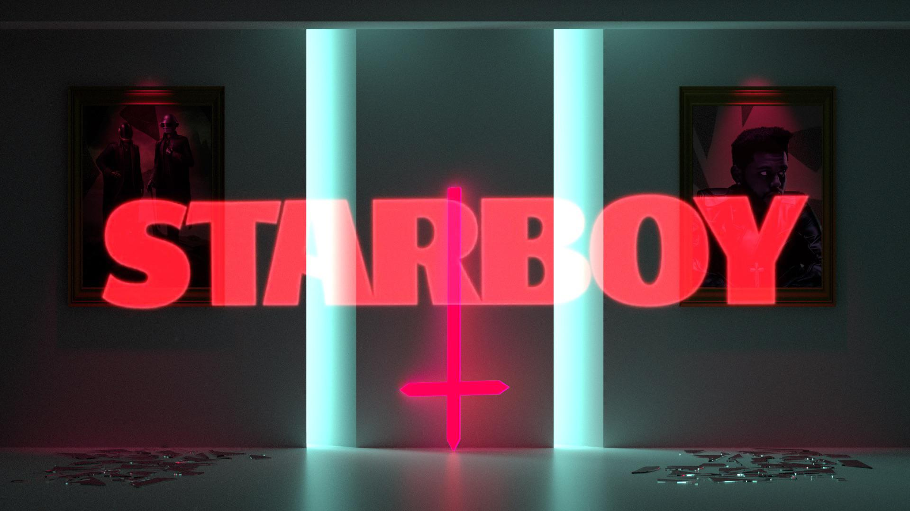

El himno definitivo del synth-pop moderno. Con una estética inspirada en los 80 y el frenesí de Las Vegas, esta canción narra la urgencia de buscar consuelo en alguien bajo el resplandor cegador de las luces de la ciudad. Es oficialmente la canción más exitosa en la historia de Billboard.

La colaboración icónica con Daft Punk que marcó el fin de una era y el nacimiento de una superestrella global. En "Starboy", Abel abraza su nuevo estatus de celebridad, mezclando ritmos R&B con texturas electrónicas mientras presume de su estilo de vida extravagante y veloz.

Una balada emocional que demuestra la vulnerabilidad de The Weeknd. Aunque fue lanzada originalmente en Starboy, su resurgimiento global años después confirmó que es un clásico atemporal sobre el amor incondicional y la dificultad de dejar ir a alguien a pesar de la distancia.

Una joya del "dark R&B" con bajos profundos y una atmósfera inquietante. La canción explora los secretos y las aventuras nocturnas en Hollywood, capturando la esencia cruda y honesta que lanzó a Abel Tesfaye al estrellato masivo.

En esta etapa de After Hours, Abel reflexiona sobre sus relaciones pasadas y su incapacidad para comprometerse, todo envuelto en una estética retro que evoca la nostalgia de los videos musicales de los años 80.

Parte de la banda sonora de la serie The Idol, esta colaboración junto a JENNIE y Lily-Rose Depp profundiza en temas de deseo, poder y sumisión. Con un ritmo lento y seductor, es una de las canciones más virales de su catálogo reciente.